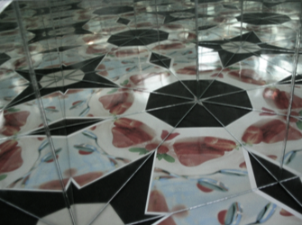
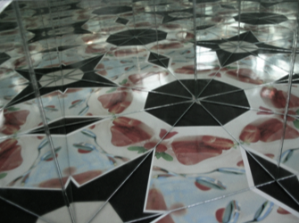
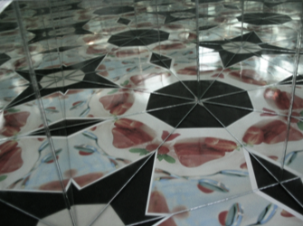

你也可以將三面鏡子擺成兩兩之間夾角皆為180度的因數。如果你要求所有的鏡子都與地面垂直的話，我們有三種方法來排鏡子 :
(60°, 60°, 60°)、 (90°, 45°, 45°)與 (90°, 60°, 30°)
只有這三種的原因是三角形內角合為180度。
這種萬花筒式的鏡面擺法會使鏡像無接縫的填滿整個平面。
你可以在右邊的模擬來生成與觀察這個現象。右邊的大滑桿可以調整出現的鏡像個數，
移動點可以調整鏡子與要被鏡射的物件的位置。
你可以在 iPhone 與 iPad 上的 iOrnament 軟體找到關於萬花筒與鏡射的更進一步說明。你也可以在那設計你自己的花樣。
Link: www.science-to-touch.com/iOrnament
|

|
真正萬花筒內的風景。